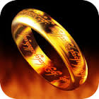

Recent Projects
Event WikiThe Event Wiki Web App allows users to create and manage their own events. The application was built using Java Servlets with JSP. This application uses mySQL database technology to store events with their corresponding images.
|
Flash Card AppThe Flash Card App was built while learning about PHP and on-line data storage. This app allows users to create flash cards to remember educational concepts. Each card has a front and back that can hold text. The card includes an animation flip using CSS events. The front end of the app is made up up of HTML, PHP and JavaScript. The back end uses a mySQL database. |
Lord of the Rings SurveyThis project was done as an exercise in using HTML 5 LocalStorage, and JavaScript charts. This web page takes the user through an interactive brief survey about their favorite characters, weapons and places from the series. All survey results are stored using Local Storage. |